Secretariat - 2025-26
The Secretariat serves as the executive board of the Society.
Comprising experienced delegates, chairs, and organizers, the Secretariat is responsible for academic integrity, conference management, and institutional continuity. Each member is committed to upholding the core values of excellence, accountability, and academic rigor.

Sivarethinavel S
President
Moonish T
Secretary-General
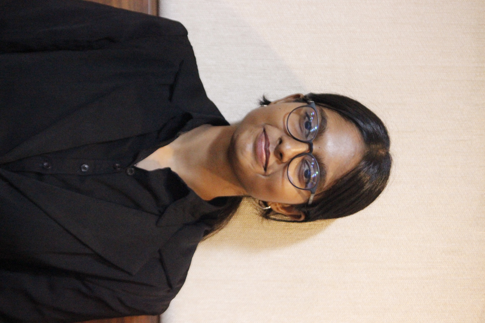
Keerthana Bharathi
Deputy Secretary-General
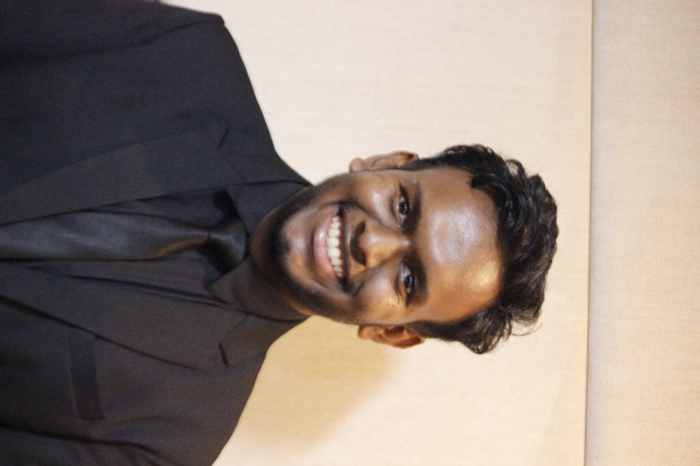
Hariharan V
Director-General
Pradhakshini J K
IPC Head
Abhishek Prasad
Director of Photography
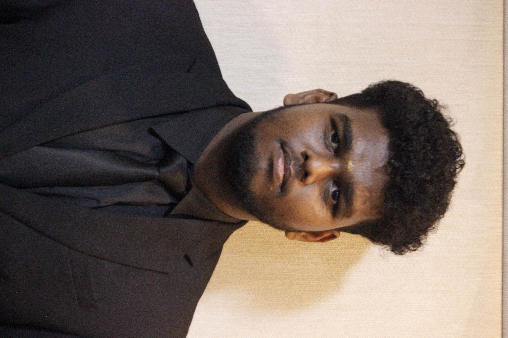
Vignesh K
Associate Director of Photography
Karpagavinayagam A
Editor in Chief
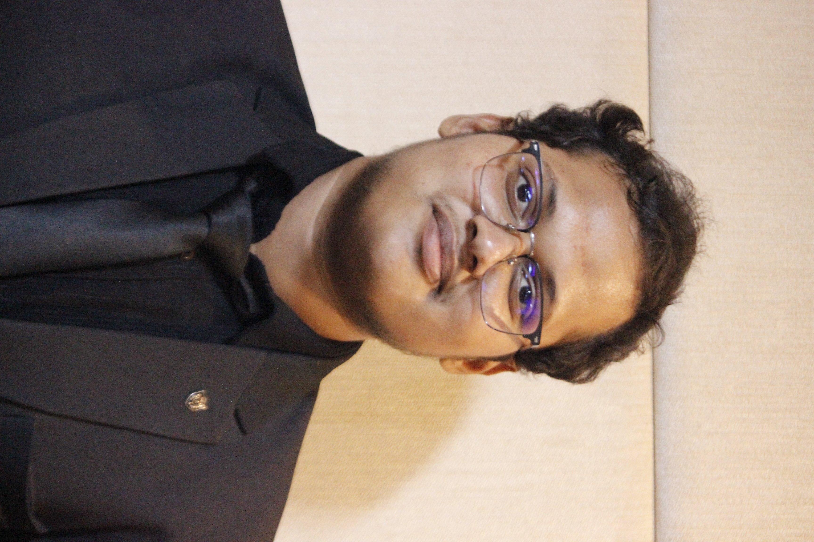
Konada Manish
Associate Editor in Chief
Amrutha Varshini Padmanabhan
Research Head
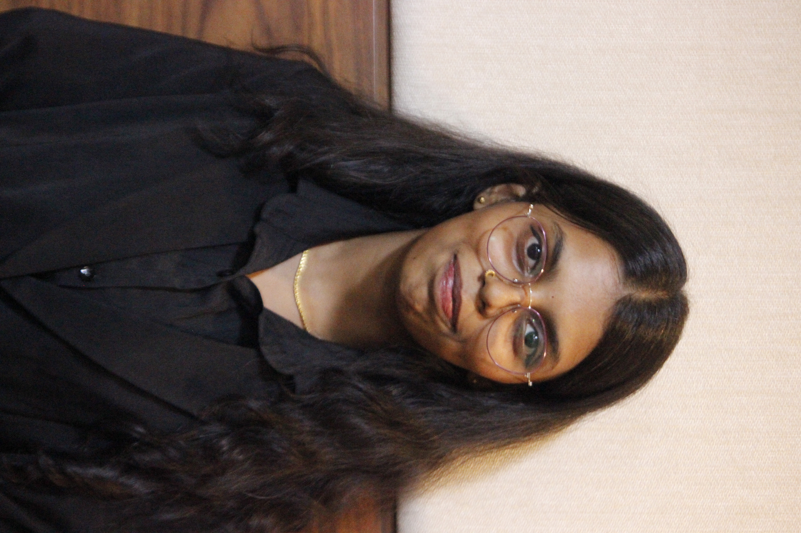
Indushri Krishnan
Research Head
Lakshmi Narasimhan
USG - Finance
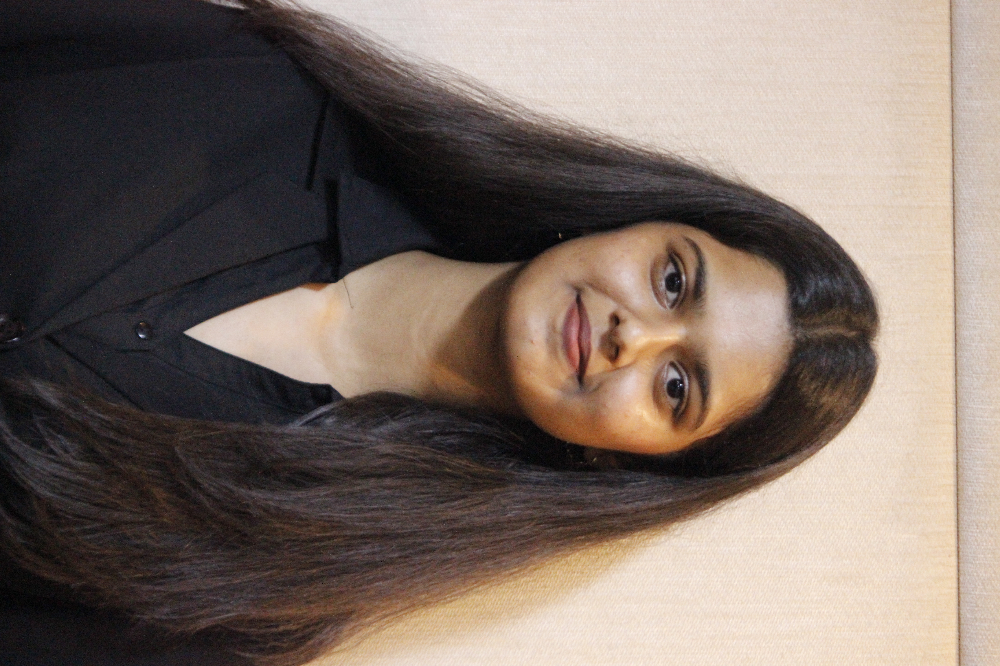
Rithanya R A
USG - Finance
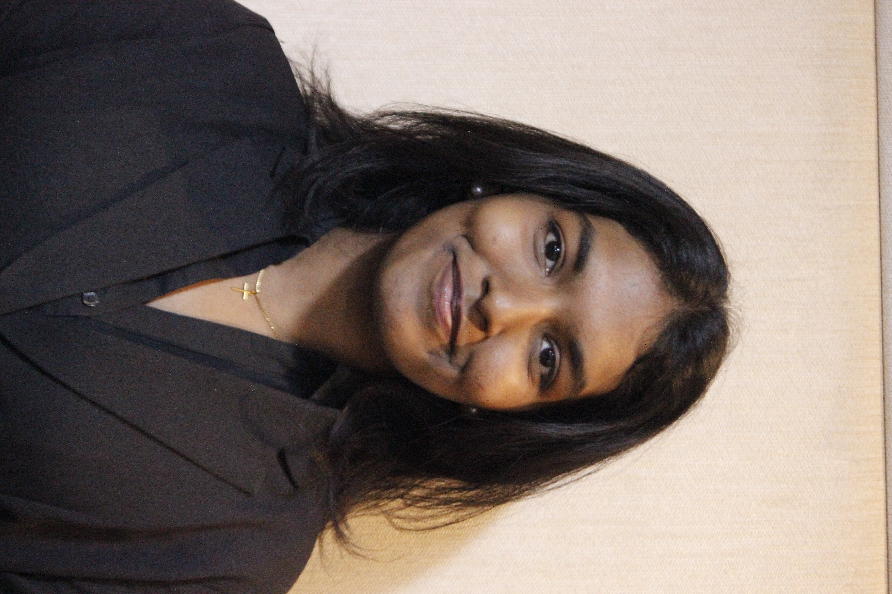
Joelin Sweety Johnson
USG - Finance
Khaleel Mohamed
USG - Marketing
Lawrance Joel T
USG - Marketing
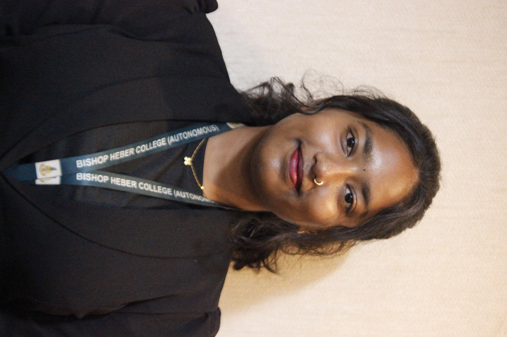
Lakshmipria
USG - Marketing
Roshan C V
USG - Delegate Affairs
Thanishtha R
USG - Delegate Affairs
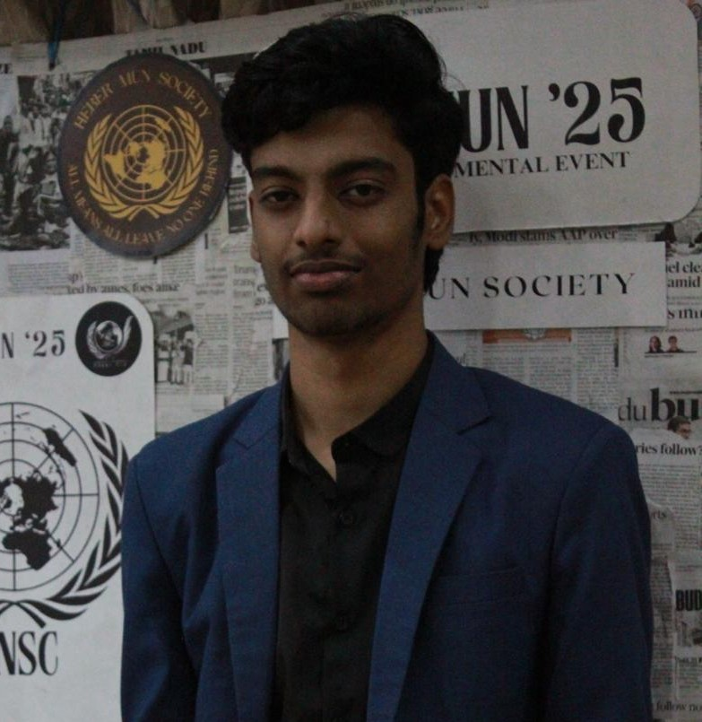
Srinath Ramesh
USG - Delegate Affairs
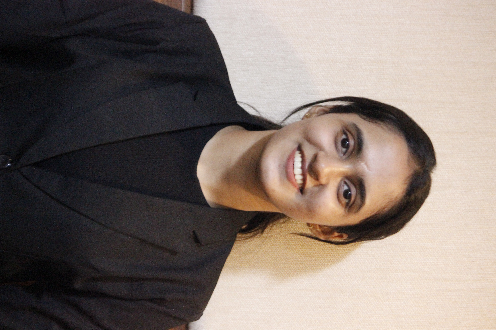
Melissa George Myladoor
USG - Public Relations
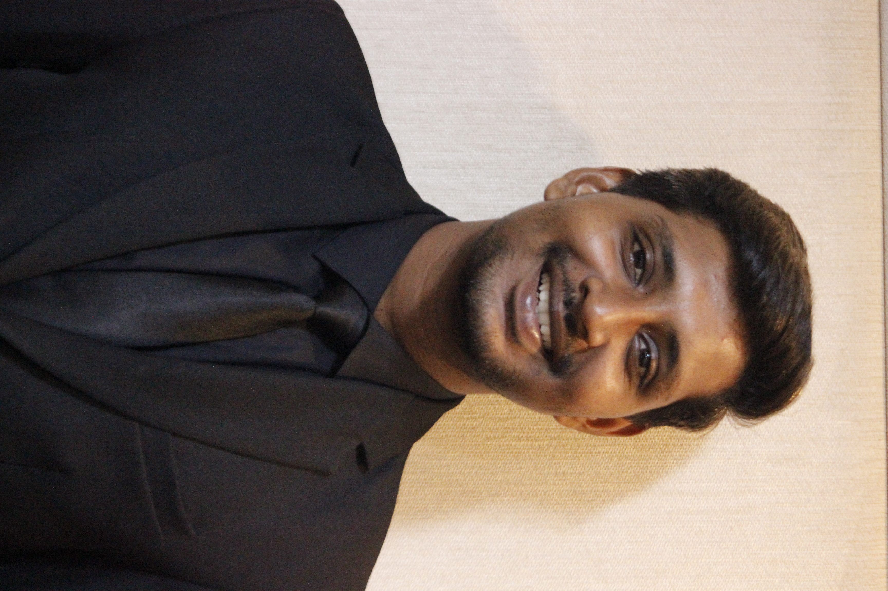
Yuvaraj
USG - Public Relations
Mohammed Ridwan
USG - Public Relations
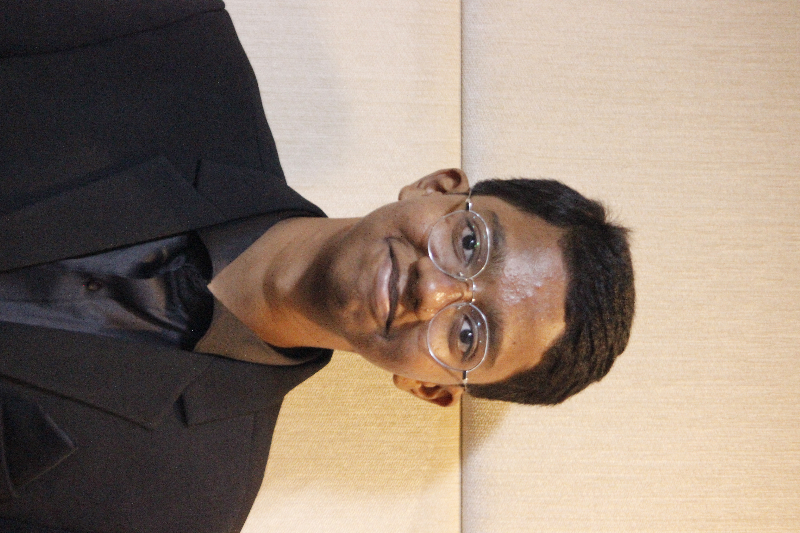
Harivaradharaj N
USG - Organizing Committee
Jobin John
USG - Organizing Committee
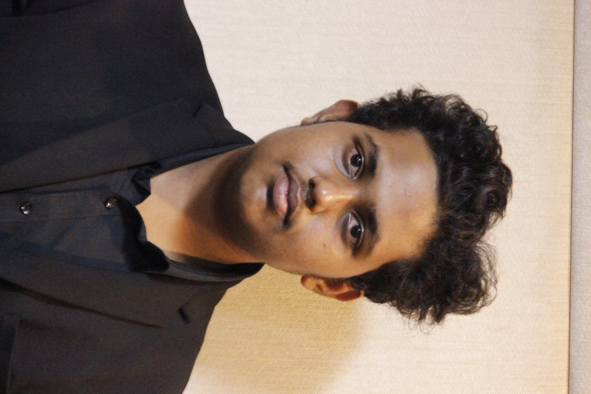
Nidhishwaran
Technical Head
Prasanna Bhatkar
Senior Advisors
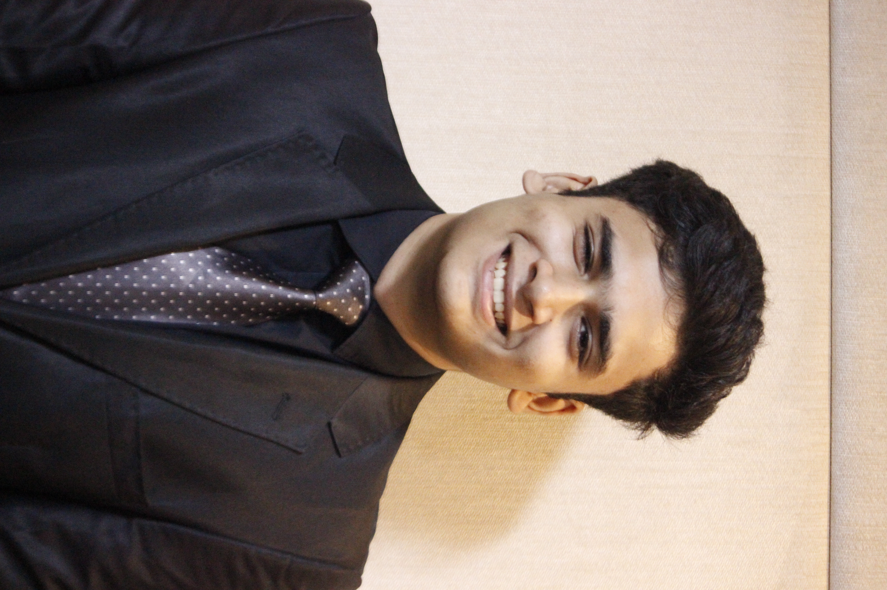